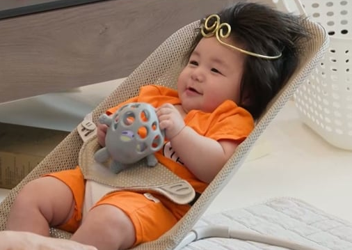

이 구역의 잡동사니
 |
| 단 1초의 오디오 공백도 허용하지 않는 투 마치 토커 정승제 X 궤도 |
|  |
| 슈돌 새가족💙 몸무게와 머리숱, 비주얼까지 압도적인 상위 1%❗ 생후 164일 하루를 소개합니다 |
 |
| "한국도 예외 아니다." AI가 절대 대체하지 못할 사람ㅣ지식인초대석 EP.71 (김대식 교수) |
| ID | |
| PW | |
 |
| '천재 피아니스트' 임윤찬의 폭탄 고백…"한국, 지옥 같았다" |
 |
| "인간 줄기세포로 배양한 배아 유사체로 혈액세포 만들었다" |
 |
| “아기상어 뚜루루뚜루”…10년 동안 조회수 163억 ‘기염’ |
| 찾아온 손님 수 |
 |
휴먼센터 3층 | 팀원: 최세인, 류혜옥, 김지영